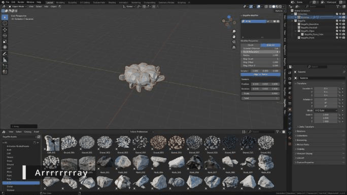

Array
The Array section repeats objects along a line, a grid, a circle, a curve, a drawn stroke or a surface. Unlike Blender's Array modifier, BagaPie arrays include random position, rotation and scale.
Video: BagaPie 11 - Parametric Tools, from 4:56.
Line, Grid and Circle
Select one object (mesh or curve), press J and choose Line, Grid or Circle. Arrays support one object at a time; repeat the operation for each object.
| Type | Settings |
|---|---|
| Line | Count, Constant Offset, Relative Offset |
| Grid | Count X / Y, Constant Offset X / Y, Relative Offset X / Y, Midlevel X / Y |
| Circle | Count or Distance mode, Constant Distance, Count, Circle Resolution, Radius, Ring Count, Ring Offset, Ring Offset Z, Rotation, Align to Center |
All three have a Random section: Position, Rotation, Scale and Seed.

For a circle, a low Circle Resolution gives a polygonal shape: increase it for a round circle. Repetition can be based on a fixed Count or on the Distance between instances.
Curve
Repeats an object along a curve.
- Select the object to repeat.
- Select the curve last.
- Press J and choose Curve.
Settings: Count or Length mode, Target curve, Rotation, Scale, Random Position / Rotation / Scale, Seed, and Align to Vector with its Vector.
Curve Deform
Deforms objects along a curve, like Blender's Array + Curve modifiers, which it uses.
- Select the object(s).
- Select the curve last.
- Press J and choose Curve Deform.
Settings: Axis, Use Relative Offset / Relative Offset, Use Constant Offset / Constant Offset. The default axis usually fits. This array has no random options.
If BagaPie reports multi-user data, apply the rotation and scale of the objects first.
Draw
Draws a curve and repeats the selected objects along it.
- Select one or more objects.
- Press J and choose Draw (or Asset Browser next to it to use assets selected in the Asset Browser).
- Draw in the viewport.
BagaPie creates a new curve, enters Edit Mode with the Draw tool, and projects the stroke on the surfaces under the cursor. Settings: Count or Length, Target, Rotation, Position, Align to Curve, Scale Min / Max, random Position / Rotation and Seed.
Array Along Shape
Repeats objects along the shape of a surface, following it by proximity.
- Select the object(s) to repeat.
- Select the surface to follow last.
- Press J and choose Array Along Shape.
| Setting | Effect |
|---|---|
| Count | Number of instances |
| Precision / Distance | Accuracy of the spacing between instances |
| Position, Rotation X / Y / Normal, Scale Min / Max, Seed | Randomization |
| Orientation Angle, Smooth Rotation | Orientation of the instances |
| Lock Axis X / Y / Z | By default the array is locked to one axis. Unlock axes for a freer result |
| Target | The surface followed |
The array can fail on sharp edges (over about 70°). Add a Bevel modifier to the surface to round them.
An Edit Mode version that also deforms the repeated mesh is in the Edit Mode pie.
Remove
Use Remove (−) in the modifier stack.